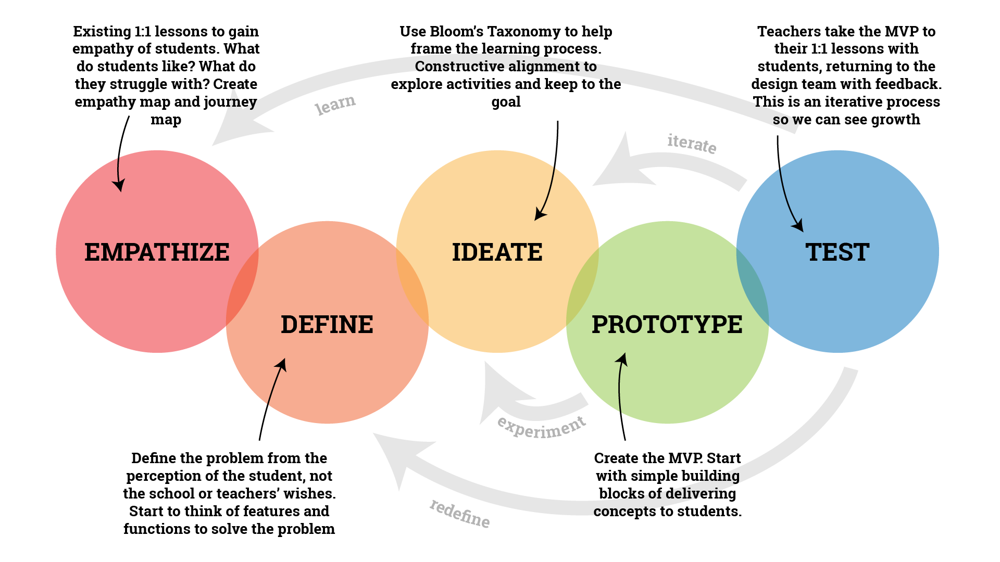
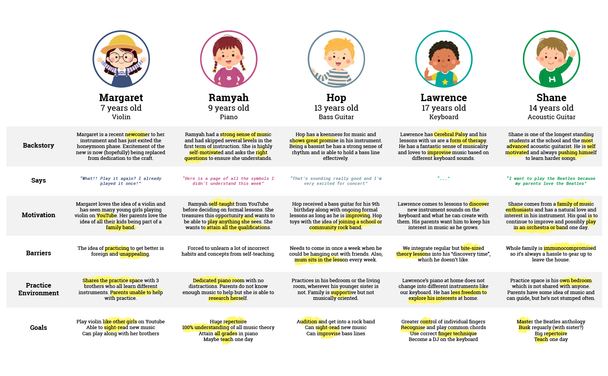
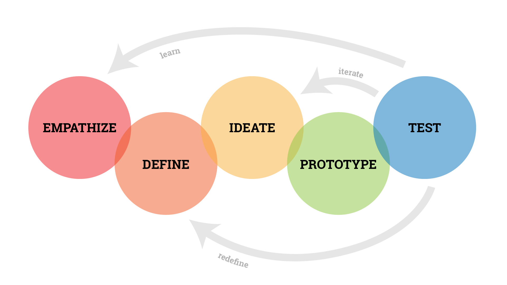

Process
Design Thinking
I chose to employ the Design Thinking framework, leveraging my background in design and user experience. Given the highly individualised and personalised nature of learning, I find the user-centric approach of Design Thinking to be the most suitable and relevant methodology.
Henderson's (2023a) perspective on Design Thinking as "a fantastic way to approach educational design, if you have time, a creative team, and the ability to try things out" is particularly relevant to our situation. As we possess all three essential components, this further reinforces the rationale for embracing this approach.
The Hasso Plattner Institute of Design (Dam, 2022) proposes a 5-stage design thinking model: Empathise, Define, Ideate, Prototype, and Test.
Empathise
The Empathise stage focuses on gaining an "empathic understanding of the problem you are trying to solve" (Dam, 2022). In this phase, we deliberately stepped back from any preconceived notions, recognising the importance of understanding the problem without bias. We observed students in their lessons, adopting an empathetic lens to discover what motivates them and how they respond to teaching approaches.
Our interactions with stakeholders were also guided by empathy, allowing us to gain insights into their expectations regarding practice and their capacity to support practice at home. These conversations aimed to uncover the underlying barriers to effective practice.
To grasp the challenges students face, we engaged in informal discussions with both students and guardians about their practice routines. We asked experiential questions about the reasons behind practices, rather than a quantitive number. This approach yielded valuable insights into the root causes of practice-related difficulties, such as being confused.
Additionally, we explored the affordances that could facilitate effective home practice. One notable finding was that students greatly benefited from video or audio recordings that provided what was expected of them. These observations and conversations have laid a foundation for our efforts in the PracticeQuest journey.
Define
Data
The Define stage serves as the point where all our efforts in the preceding Empathise stage converge (Dam, 2022). In this stage, we've gathered, cleaned, and analysed the collected data. Our conclusions, refined through discussions with students, now guide us in gaining a more precise understanding of the fundamental issues we face.
Insights
The lack of explicit guidance on what to practice and how to do so correctly not only leaves students navigating their musical journey with uncertainty but also erodes their motivation, setting in motion a discouraging cycle of reduced practice, diminished progress, and further declining enthusiasm.
The common directive to "go practice" falls short of producing meaningful results and can potentially create negative associations with music practice, leading to a less enjoyable experience.
Students who haven't dedicated much time to practice often shine in the classroom when guided by their teacher. The presence of a guiding figure is instrumental in keeping them motivated and on track in their musical journey.
While some guardians may have the capacity to assist with practice at home, it's important to avoid assuming this is universally applicable. Many guardians, juggling busy schedules and often lacking musical expertise, face challenges in providing effective practice guidance due to limited time and mismatched instructional resources.
Solution
To develop a comprehensive practice support system that offers clear and engaging guidance for students during home practice sessions without the need for a guardian. This system will not only prompt daily guided practice but also enhance their motivation using gamification, ensuring a more enjoyable and fulfilling musical learning experience while away from the school.
Ideate
See Gamification and Constructive Alignment
Prototype
See Design Decisions and Instructional Videos
Test
The Test stage is where a "designers or evaluators rigorously test the complete product" (Dam, 2020). As such, we will conduct iterative testing of the PracticeQuest prototype during this stage. In further iterations, this will include a larger range of students.
Drawing upon input from both students and guardians, we maintain a receptive stance towards reevaluating issues based on the feedback we gather, perpetuating the iterative nature of the Design Thinking process.
As Dam (2022) states, "the ultimate goal is to get as deep an understanding of the product and its users as possible", where the product is PracticeQuest and the users are our students and their guardians. This dynamic approach ensures that PracticeQuest continually evolves to effectively cater to the needs of our learners.